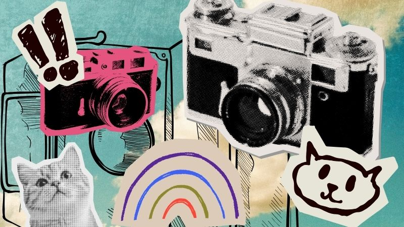

BGone
RetroIt

Checksy
About these tools
These are small single-file web apps that run entirely in your browser and are completely free to use.
You can use them directly from this page, or download the HTML files from the
Blizlab tools repository on GitHub
and open them offline.